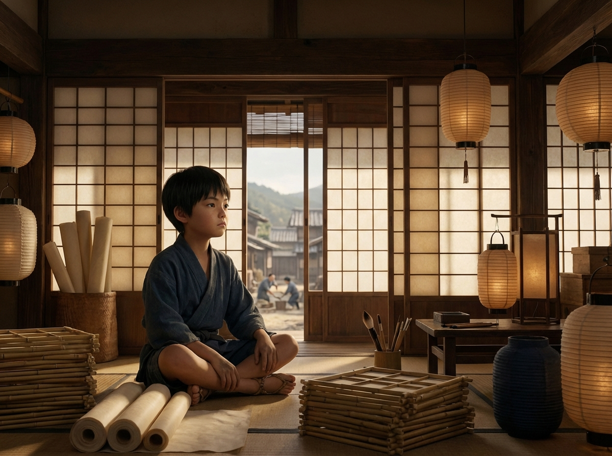
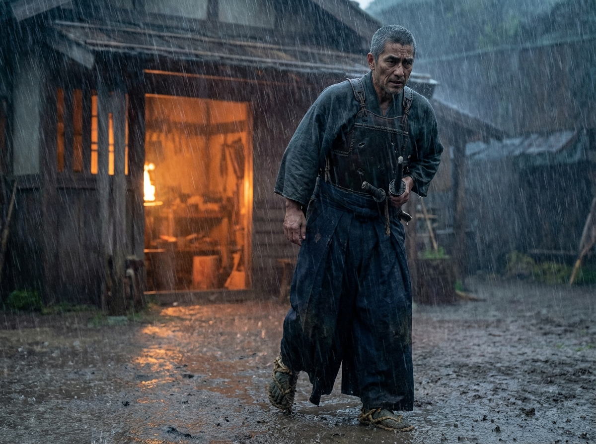
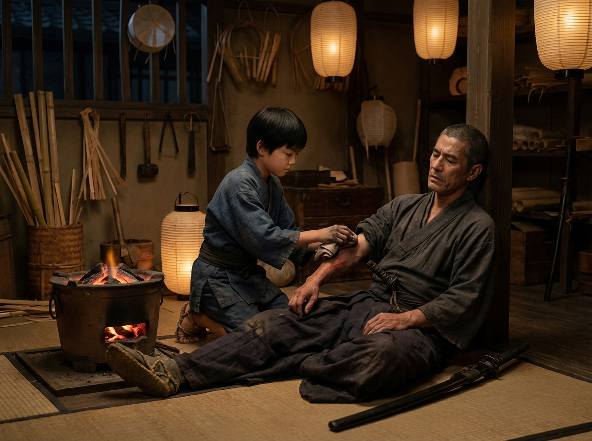
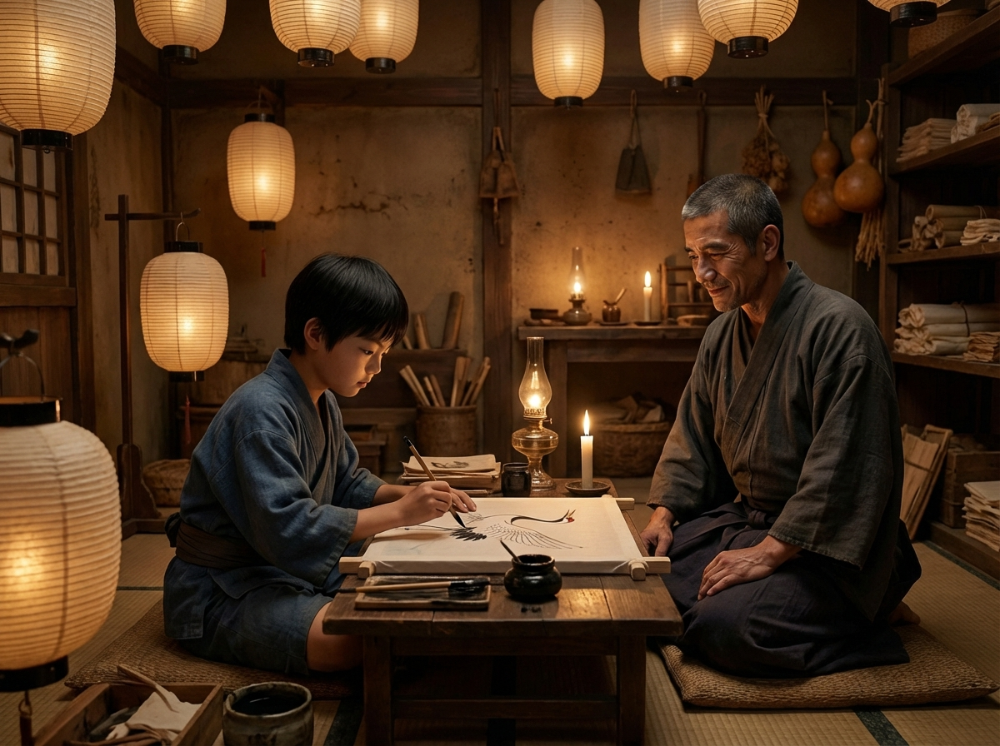
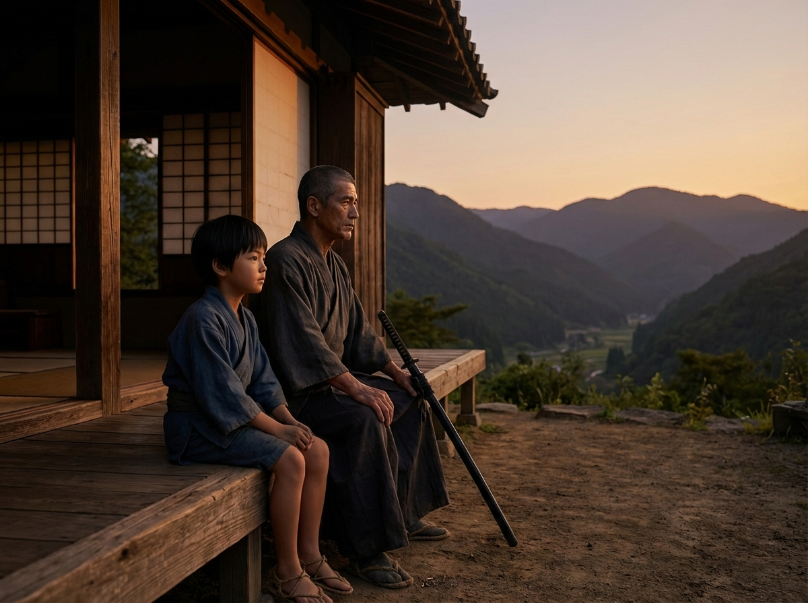
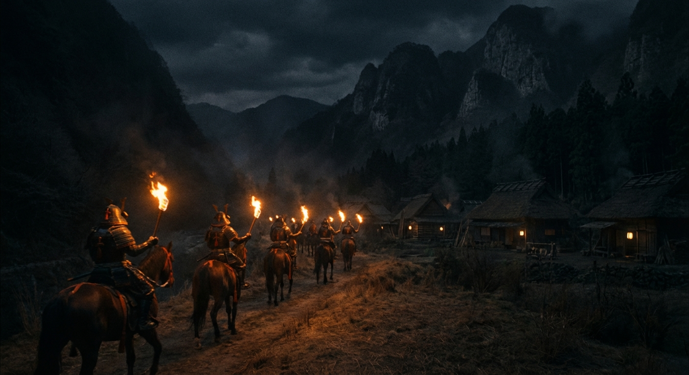
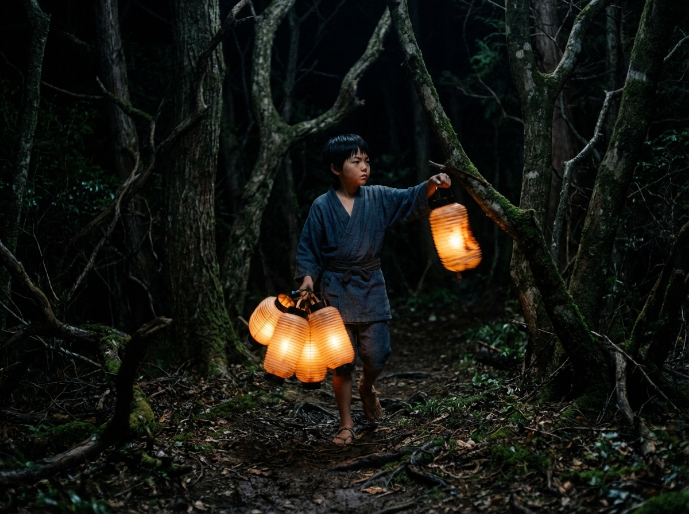
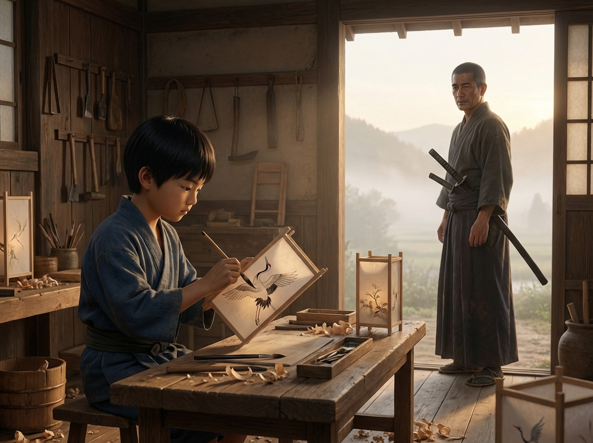

The Lantern and the Sword
A Tale of Courage and Conviction
Sengoku Japan · 16th Century

A Tale of Courage and Conviction
Sengoku Japan · 16th Century

Koji was eleven years old and already tired of paper. Every morning he cut it, folded it, and stretched it over bamboo frames while his father, Daichi, painted careful flowers and cranes on each panel.
Their lanterns hung in tea houses and temple gates across the province. People said they were the finest in Mino. But Koji did not want to make fine things. He wanted to make powerful things.
Across the river, the swordsmiths worked at their forges. He could hear the hammer-song all day long, and at night he dreamed of steel.

One autumn evening a typhoon tore across the valley. Rain lashed the wooden shutters and the river rose past its banks.
Koji was closing the workshop door when a figure appeared in the downpour: a man in battered armor, limping badly, one arm pressed against his side. He collapsed against the doorframe without a word.
"Father!" Koji called.
Daichi came quickly. Together they pulled the stranger inside and laid him near the charcoal brazier. Blood seeped through the gaps in his chest plate. His sword, still in its scabbard, was tied to his back with a torn cord.

The man's name was Tatsuo. He was a retainer to a minor lord whose castle had fallen three days earlier. He had fought his way out alone and walked until his legs gave way.
While Daichi cleaned and wrapped the wound, Koji stared at the sword. It was longer than he was tall, the handle wrapped in dark silk cord, the guard shaped like a curled wave.
"You keep looking at it," Tatsuo said. His voice was rough but not unkind.
"It must be very powerful," Koji said.
"It is very heavy," the samurai answered. "That is not the same thing."

Tatsuo healed slowly. The wound had cut deep, and for several days he could do nothing but sit and watch Koji and Daichi work.
One evening Koji was painting a lantern panel, a crane mid-flight, its wings spread wide. His hand was steady, his breathing slow. He did not notice Tatsuo watching until the samurai spoke.
"Where did you learn to hold so still?"
"From the brush," Koji said, surprised. "If your hand shakes, the line breaks."
"It is the same with a sword," Tatsuo said quietly. "The cut follows the stillness."
Koji looked at his brush as though seeing it for the first time.

As the days passed, Koji gathered the courage to ask the question that had been pressing against his ribs.
"What does it feel like," he asked, "to carry a sword into battle?"
Tatsuo was quiet for a long time. Outside, the cicadas sang.
"Cold," he said at last. "And afterwards, heavy. You carry everyone you have faced. The sword remembers what you try to forget."
Koji had imagined glory. He had not imagined weight.
"Your father makes things that hold light," Tatsuo added. "That is not a small thing. In wartime it may be the bravest thing of all."

That night, shouts rose from the village below. Torches appeared on the road: a column of mounted soldiers, searching homes and storehouses for deserters and supplies.
Tatsuo reached for his sword, then stopped. Standing meant tearing the wound open. Fighting meant bringing the soldiers straight to the workshop.
"If they find me here, they will burn your home," he said flatly.
Daichi looked at his son. Koji's heart pounded. He looked at the stack of finished lanterns near the door, and an idea took shape.

Koji grabbed four lanterns and a flint. He ran out the back door and down the slope toward the tree line, lighting each lantern as he went and hanging them from low branches along a deer trail that led away from the workshop.
The warm glow bobbed and swayed in the wind, mimicking the movement of a man carrying a torch. From the road, it would look like someone fleeing into the forest.
He heard the riders shout. Hooves turned off the road and thundered toward the trees, away from the workshop.
Koji crouched in the dark, breathing hard, and watched his lanterns do what no sword could have done.

By morning, the soldiers had moved on. Tatsuo sat by the door, watching the mist lift from the valley.
"You did not need a sword last night," he said.
"No," Koji said. "I needed a lantern."
Tatsuo left that afternoon, walking slowly toward the eastern pass. At the door he turned back.
"The world has enough swords," he said. "It does not have enough light."
Koji watched him go, then sat down at his workbench. He picked up the brush, dipped it in black ink, and began to paint. The crane's wings spread wide, steady and sure, and the line did not break.
Answer the questions below to test what you learned from the story.
The world has enough swords. It does not have enough light.— Tatsuo